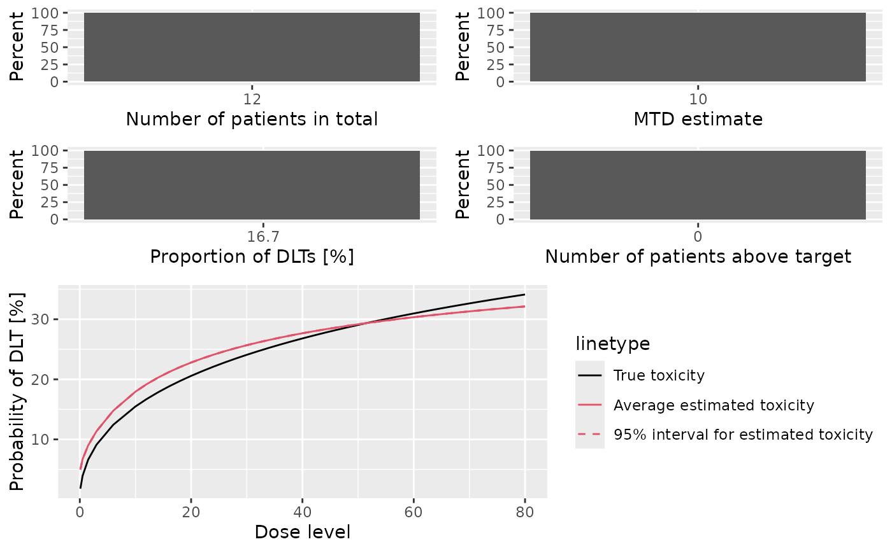
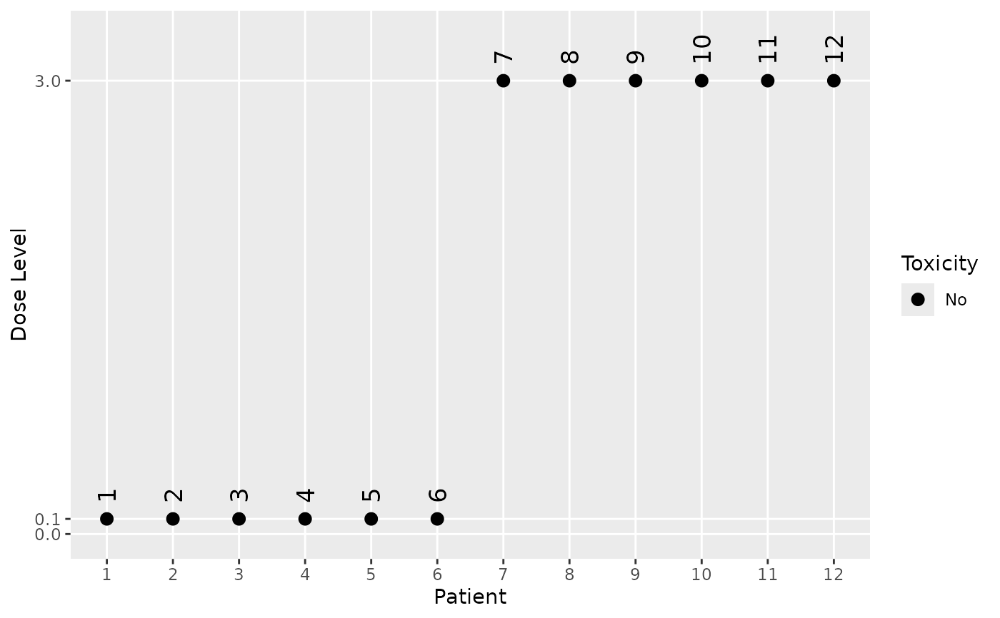

Simulate Method for the DesignGrouped Class
Source: R/Design-methods.R
simulate-DesignGrouped-method.Rd![[Experimental]](figures/lifecycle-experimental.svg)
A simulate method for DesignGrouped designs.
Usage
# S4 method for DesignGrouped
simulate(
object,
nsim = 1L,
seed = NULL,
truth,
combo_truth,
args = data.frame(),
firstSeparate = FALSE,
mcmcOptions = McmcOptions(),
parallel = FALSE,
nCores = min(parallelly::availableCores(), 5),
...
)Arguments
- object
(
DesignGrouped)
the design we want to simulate trials from.- nsim
(
number)
how many trials should be simulated.- seed
(
RNGstate)
generated withset_seed().- truth
(
function)
a function which takes as input a dose (vector) and returns the true probability (vector) for toxicity for the mono arm. Additional arguments can be supplied inargs.- combo_truth
(
function)
same astruthbut for the combo arm.- args
(
data.frame)
optionaldata.framewith arguments that work for both thetruthandcombo_truthfunctions. The column names correspond to the argument names, the rows to the values of the arguments. The rows are appropriately recycled in thensimsimulations.- firstSeparate
(
flag)
whether to enroll the first patient separately from the rest of the cohort and close the cohort in case a DLT occurs in this first patient.- mcmcOptions
(
McmcOptions)
MCMC options for each evaluation in the trial.- parallel
(
flag)
whether the simulation runs are parallelized across the cores of the computer.- nCores
(
number)
how many cores should be used for parallel computing.- ...
not used.
Value
A list of mono and combo simulation results as Simulations objects.
Examples
# Assemble ingredients for our group design.
my_stopping <- StoppingTargetProb(target = c(0.2, 0.35), prob = 0.5) |
StoppingMinPatients(10) |
StoppingMissingDose()
my_increments <- IncrementsDoseLevels(levels = 3L)
my_next_best <- NextBestNCRM(
target = c(0.2, 0.3),
overdose = c(0.3, 1),
max_overdose_prob = 0.3
)
my_cohort_size <- CohortSizeConst(3)
empty_data <- Data(doseGrid = c(0.1, 0.5, 1.5, 3, 6, seq(from = 10, to = 80, by = 2)))
my_model <- LogisticLogNormalGrouped(
mean = c(-4, -4, -4, -4),
cov = diag(rep(6, 4)),
ref_dose = 0.1
)
# Put together the design. Note that if we only specify the mono arm,
# then the combo arm is having the same settings.
my_design <- DesignGrouped(
model = my_model,
mono = Design(
model = my_model,
stopping = my_stopping,
increments = my_increments,
nextBest = my_next_best,
cohort_size = my_cohort_size,
data = empty_data,
startingDose = 0.1
),
first_cohort_mono_only = TRUE,
same_dose_for_all = TRUE
)
# Set up a realistic simulation scenario.
my_truth <- function(x) plogis(-4 + 0.2 * log(x / 0.1))
my_combo_truth <- function(x) plogis(-4 + 0.5 * log(x / 0.1))
matplot(
x = empty_data@doseGrid,
y = cbind(
mono = my_truth(empty_data@doseGrid),
combo = my_combo_truth(empty_data@doseGrid)
),
type = "l",
ylab = "true DLT prob",
xlab = "dose"
)
legend("topright", c("mono", "combo"), lty = c(1, 2), col = c(1, 2))
# Start the simulations.
set.seed(123)
my_sims <- simulate(
my_design,
nsim = 1, # This should be at least 100 in actual applications.
seed = 123,
truth = my_truth,
combo_truth = my_combo_truth
)
# Looking at the summary of the simulations:
mono_sims_sum <- summary(my_sims$mono, truth = my_truth)
combo_sims_sum <- summary(my_sims$combo, truth = my_combo_truth)
mono_sims_sum
#> Summary of 1 simulations
#>
#> Target toxicity interval was 20, 35 %
#> Target dose interval corresponding to this was NA, NA
#> Intervals are corresponding to 10 and 90 % quantiles
#>
#> Number of patients overall : mean 12 (12, 12)
#> Number of patients treated above target tox interval : mean 0 (0, 0)
#> Proportions of DLTs in the trials : mean 0 % (0 %, 0 %)
#> Mean toxicity risks for the patients on active : mean 3 % (3 %, 3 %)
#> Doses selected as MTD : mean 12 (12, 12)
#> True toxicity at doses selected : mean 5 % (5 %, 5 %)
#> Proportion of trials selecting target MTD: 0 %
#> Dose most often selected as MTD: 12
#> Observed toxicity rate at dose most often selected: NaN %
#> Fitted toxicity rate at dose most often selected : mean 8 % (8 %, 8 %)
#> Stop reason triggered:
#> P(0.2 ≤ prob(DLE | NBD) ≤ 0.35) ≥ 0.5 : 0 %
#> ≥ 10 patients dosed : 100 %
#> Stopped because of missing dose : 0 %
combo_sims_sum
#> Summary of 1 simulations
#>
#> Target toxicity interval was 20, 35 %
#> Target dose interval corresponding to this was 18.6, NA
#> Intervals are corresponding to 10 and 90 % quantiles
#>
#> Number of patients overall : mean 12 (12, 12)
#> Number of patients treated above target tox interval : mean 0 (0, 0)
#> Proportions of DLTs in the trials : mean 17 % (17 %, 17 %)
#> Mean toxicity risks for the patients on active : mean 9 % (9 %, 9 %)
#> Doses selected as MTD : mean 6 (6, 6)
#> True toxicity at doses selected : mean 12 % (12 %, 12 %)
#> Proportion of trials selecting target MTD: 0 %
#> Dose most often selected as MTD: 6
#> Observed toxicity rate at dose most often selected: NaN %
#> Fitted toxicity rate at dose most often selected : mean 15 % (15 %, 15 %)
#> Stop reason triggered:
#> P(0.2 ≤ prob(DLE | NBD) ≤ 0.35) ≥ 0.5 : 0 %
#> ≥ 10 patients dosed : 100 %
#> Stopped because of missing dose : 0 %
plot(mono_sims_sum)
plot(combo_sims_sum)

# Looking at specific simulated trials:
trial_index <- 1
plot(my_sims$mono@data[[trial_index]])

plot(my_sims$combo@data[[trial_index]])